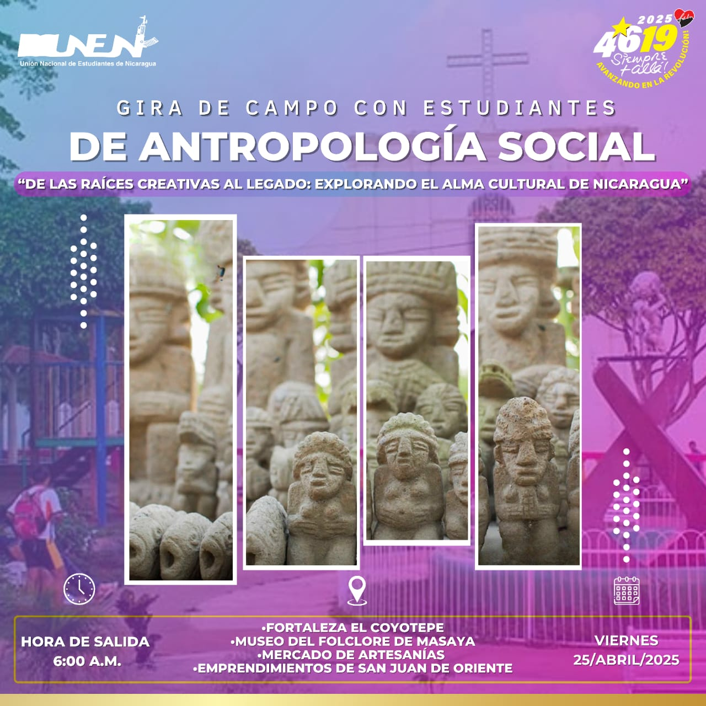

Click al Conocimiento, Una mirada de la Antropología.
Acerca de Nosotros
Click al Conocimiento es una plataforma dedicada al estudio y difusión de la Antropología Social.
Como organización sin fines de lucro, promovemos el análisis crítico, la diversidad cultural y el entendimiento humano desde una mirada gráfica y educativa.
Visión
Ser una plataforma reconocida por su enfoque cercano, inclusivo y creativo en la enseñanza y exploración de la Antropología Social, fomentando el pensamiento crítico, la sensibilidad social y el interés por la diversidad cultural.
Misión
Brindar un espacio accesible y dinámico para la difusión de conocimientos en Antropología Social, facilitando la comprensión de las realidades culturales, sociales y humanas a través de contenidos claros, atractivos y útiles para la formación académica.
Recursos Fotográficos
Los recursos fotográficos presentados constituyen un valioso aporte para el estudio de la antropología social en las comunidades de León, Sutiaba y Cuajachillo Estas imágenes documentan aspectos fundamentales de la vida cotidiana, las tradiciones culturales, las relaciones sociales y las expresiones identitarias propias de estos territorios. A través de una mirada etnográfica, las fotografías permiten captar la riqueza cultural y social de sus habitantes, evidenciando prácticas ancestrales y dinámicas contemporáneas que conforman el entramado social de estas localidades. Así, estos recursos no solo funcionan como testimonio visual, sino también como herramienta de análisis para comprender mejor las complejidades sociales y culturales que caracterizan a estas comunidades nicaragüenses.
Colegio Fray de Pamplona, Cuajachillo, Managua. Fotografía por Ricardo Chavarría
Colegio Fray de Pamplona, Cuajachillo, Managua. Fotografía por Ricardo Chavarría
Colegio Fray de Pamplona, Cuajachillo, Managua. Fotografía por Ricardo Chavarría
Arte Crisan, Sutiaba, León. Fotografía por Michael Chávez
Arte Crisan, Sutiaba, León. Fotografía por Ithany Ortiz
Arte Crisan, Sutiaba, León. Fotografía por Michael Chávez
Mapa Interactivo
El mapa interactivo desarrollado tiene como objetivo principal mostrar de manera clara y dinámica las áreas de Nicaragua donde se han realizado trabajos antropológicos.Este recurso no solo permite identificar las zonas de intervención antropológica, sino que también ofrece una plataforma accesible para la difusión del conocimiento generado en cada lugar, promoviendo el diálogo entre investigadores, comunidades y público general interesado en la antropología social nicaragüense.
Recursos Académicos
La Revista Raíces, Revista de Ciencias Sociales y Políticas es una publicación académica de la Universidad Nacional Autónoma de Nicaragua, Managua (UNAN-Managua), dedicada a la difusión del conocimiento científico en el ámbito de las ciencias sociales y políticas. Su propósito es fomentar el pensamiento crítico, el análisis riguroso y el diálogo académico sobre las realidades sociales, económicas, culturales y políticas que marcan el devenir de nuestras sociedades
Herramientas Etnográficas Clave
Áreas de Oportunidad
Las áreas de oportunidad laboral para la antropología social en Nicaragua abarcan diversos espacios donde el conocimiento cultural y social es esencial. Instituciones estatales, organizaciones no gubernamentales, universidades y comunidades locales representan escenarios clave para aplicar enfoques antropológicos en el diseño de políticas, proyectos sociales y procesos educativos. Estos espacios permiten al antropólogo contribuir activamente al desarrollo comunitario, la preservación cultural y la investigación aplicada, fortaleciendo habilidades como el análisis crítico, la mediación intercultural y la acción participativa en contextos diversos.

Eventos Especiales
Voluntariados Especiales
Contactos
Contáctanos al correo siguiente: clicckalconocimiento@gmail.com
Cita Bibliográfica
Chávez, M., Ortiz, I., & Chavarría, R. (2025). Cartografías culturales de Nicaragua: una mirada desde la Antropología Social. Click al Conocimiento. https://clickalconocimiento.org/revistas/cartografias2025
ABC Color. (2023, 1 de septiembre). Antropología y etnografía: herramientas y vinculación con otras ciencias humanas. https://www.abc.com.py/articulos/la-antropologia-y-otras-ciencias-humanas-751943.html